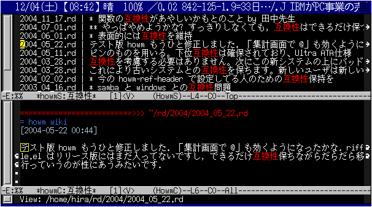
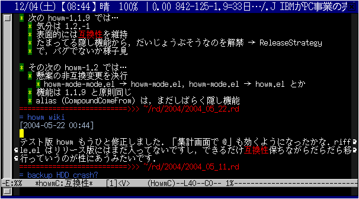
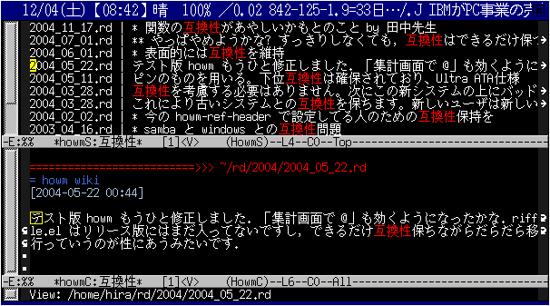
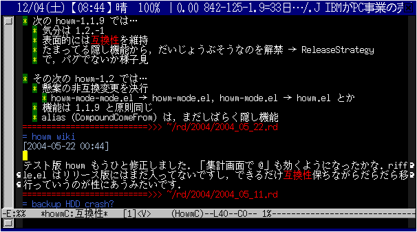

>>> ~/BabyloniaWave.txt
>>> highway planet
<<< crystal star cluster
in file A,
all strings 'crystal star cluster' in other files are automatically linked to A.


(require 'howm)
(add-to-list 'load-path "/usr/share/emacs/site-lisp/howm/")
(setq howm-view-use-grep t) ;; use external grep
(setq howm-menu-refresh-after-save nil)
(setq howm-menu-expiry-hours 6) ;; cache menu N hours
(setq howm-menu-file "0000-00-00-000000.txt") ;; don't *search*